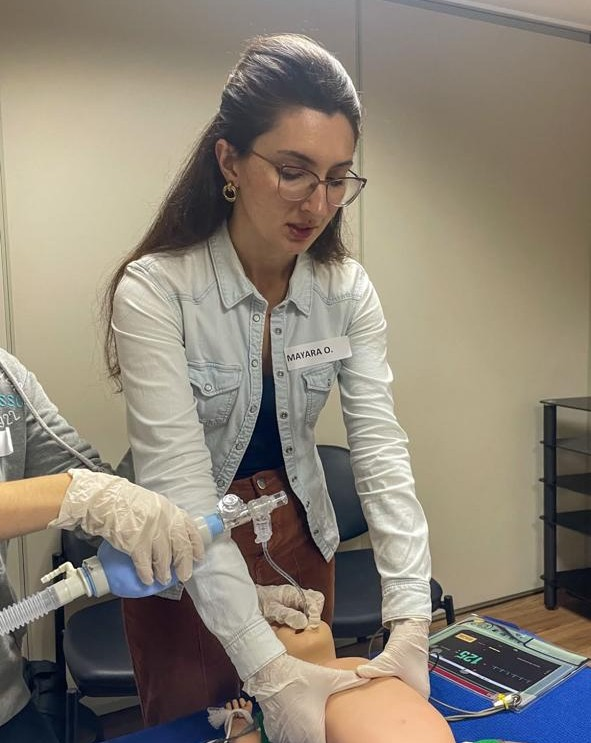

Seja bem-vindo!
Tecnologia que cuida da gestação com carinho e eficiência.
Pré-natal de alto risco
Faça acompanhamento de alto risco com ajuda de um site completo com todas as informações necessárias.
Fácil acesso
Tenha acesso as informações da suas pacientes 24 horas por dia. As informações sempre ao alcance!
Conforto e segurança
Ofereça um site com todas as informações que suas pacientes precisam com fácil acesso.

Sobre mim.
Este projeto nasceu da minha vivência na área da saúde, onde percebi o quanto a tecnologia tem que ser uma aliada no nosso dia a dia. Senti na prática, a necessidade de uma ferramenta que realmente facilitasse o trabalho dos profissionais e ajudasse a identificar sinais importantes para um atendimento mais humanizado e eficiente. Mais do que um sistema, essa iniciativa é uma forma de contribuir com o que acredito: Que a tecnologia aliada com a atenção às necessidades do dia dia e propósito, pode transformar o cuidado e a experiência no atendimento.